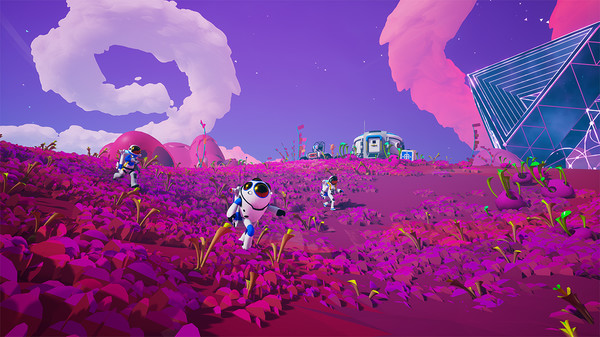
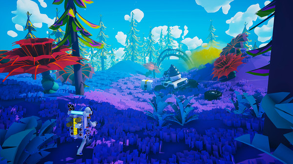
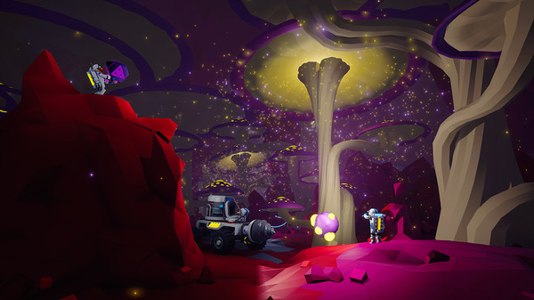
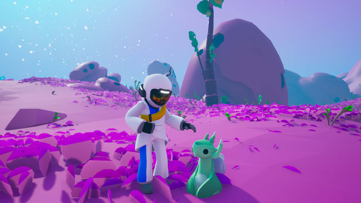
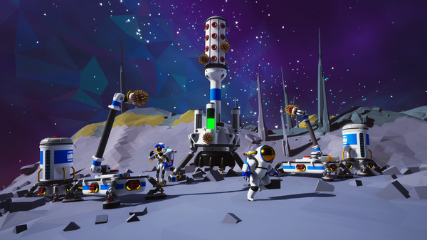
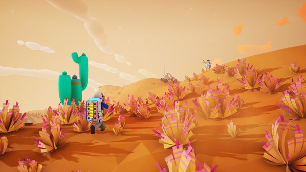
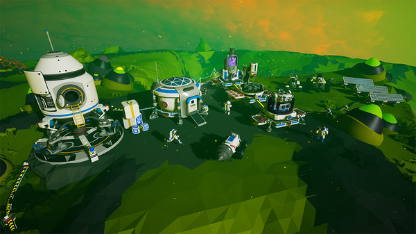
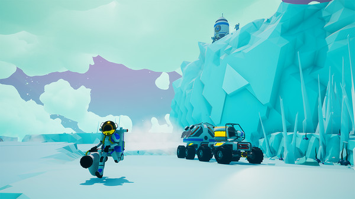
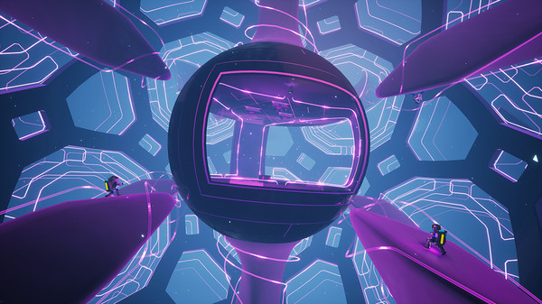
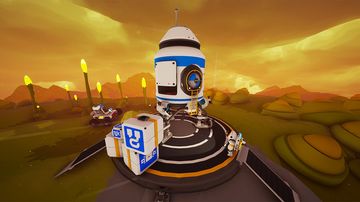

第三人称跟随 · 机位略高于地面紫色花海星球低多边形植被铺满地面，粉紫天空 + 甜甜圈状云，右侧玻璃穹顶基地。

第三人称跟随 · 背后视角蓝紫森林星球冷色环境光 + 红色植物强撞色；远景有巨型环状结构拉开纵深。

洞穴内部视角 · 低机位发光蘑菇洞穴暗部为主，靠洞口天光与荧光植物打亮；画面有强烈的明暗引导。

第三人称近景 · 角色特写浅蓝天空 · 角色与生物圆润的白色宇航服 + 彩色条纹；低多边形岩石，浅粉地面，软光影。

平视中景 · 广角灰白岩原 · 模块基地广角让模块化建筑显得高大；星空背景，暖黄灯点形成节奏。

第三人称跟随 · 行进中橙色沙漠星球整屏暖橙单色调，靠绿仙人掌撞色；地平线有微倾斜的动感。

高角度俯瞰 · 鸟瞰全景绿色星球 · 基地全景俯视看整个基地布局，大量太阳能板与车辆；地形面片棱线清晰可见。

第三人称跟随 · 强逆光冰原星球太阳位于画面中央形成强逆光；青色冷调，越野车与角色同框。

广角仰视 · 穿过结构霓虹结构内部紫色全息网格线铺满空间，球形舱室居中，速度与穿透感极强。

平视中景 · 肩后跟随黄昏橙绿星球日落把天空染成橙金渐变；圆润的山丘与发光植物，氛围极安静。
低多边形 + 无贴图地形全是三角面片、每个面一个纯色。意味着可以用代码算法生成，一张美术素材都不用。
相机以「第三人称跟随」为默认机位始终在角色后上方，跟随前进。这是最舒服、最容易做的 3D 跑动视角。
但镜头会主动切换俯瞰全景、近景特写、洞穴低机位、广角仰视——视角随场景变化，这正是戏剧性的来源。
大色块天空 + 单色统治一颗星球一个主色（紫 / 绿 / 橙 / 冰蓝），冲突色只留给关键物体。
强逆光与雾把太阳放进画面中央，用雾拉开远景层次——零成本，但质感立刻上一档。